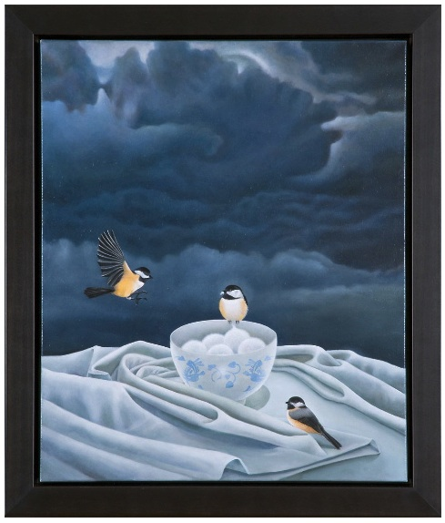
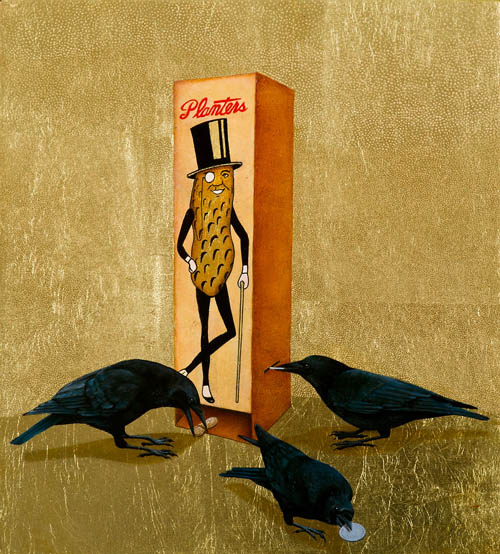
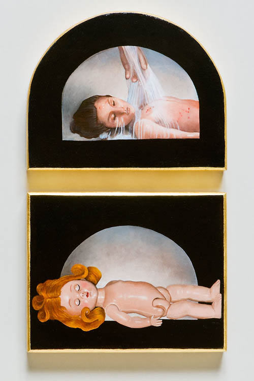
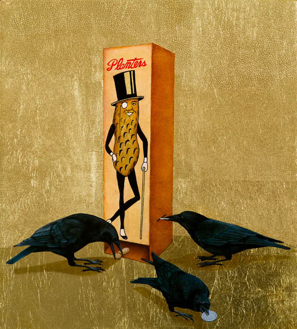
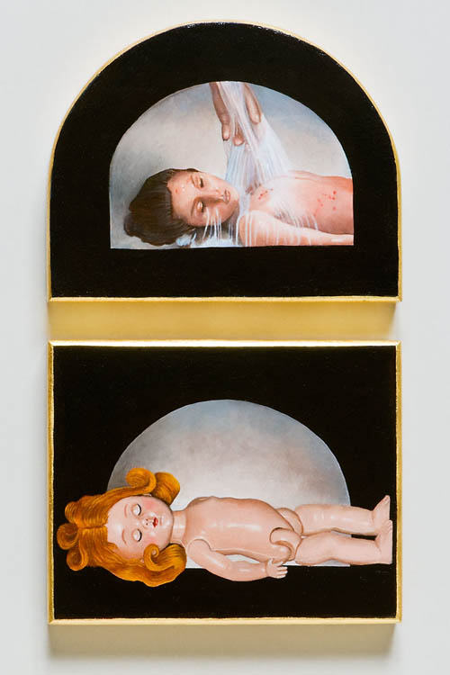

Hope-2008

Crow Soup-2011
Mr.Peanut And The Crows-2011
Lay Me Down To Sleep-2010

Glorious Triumph-2010
Awards And Shows Main Page Marsha's Biology ArtMarsha’s work invites the viewer to ponder the more resonant meaning of value against the cultural beliefs and conventions. Using symbolism evolved from the Victorians, she expresses vulnerability against a ready ability to fly or even swim. The bird a Victorian symbol for freedom is often used a symbol for woman. The egg symbolizes potential, new life and immortal life cycles. The nest is the home. Sometimes Marsha includes a portrait in her work relating to the bird(s) and their environment. This creates a tension between the woman pictured with the woman symbolized. The stark beauty expresses that suppression of a sustainable and meaningful understanding with nature. Kennedy’s paintings reference connections between humanity and the environment that are often destructive aspects of this relationship.
Hope-2008
Crow Soup-2011
Mr.Peanut And The Crows-2011
Lay Me Down To Sleep-2010
Glorious Triumph-2010
Awards And Shows Main Page Marsha's Biology Art